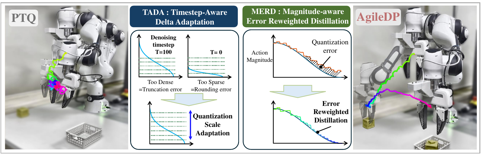
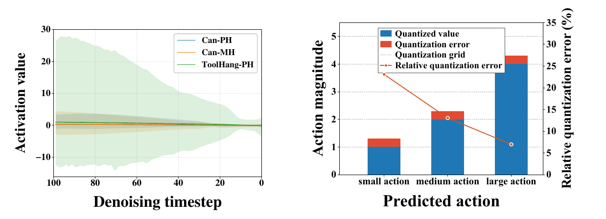
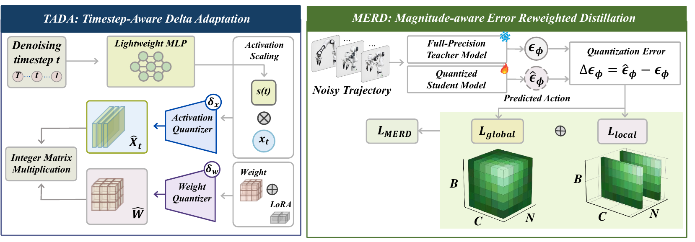
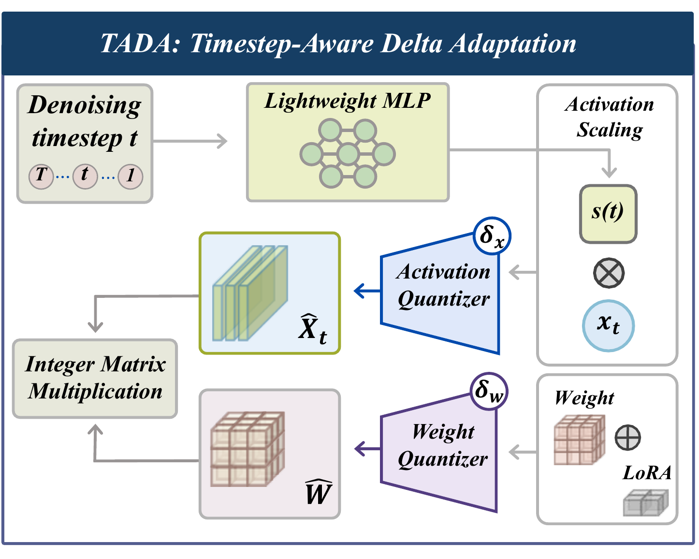
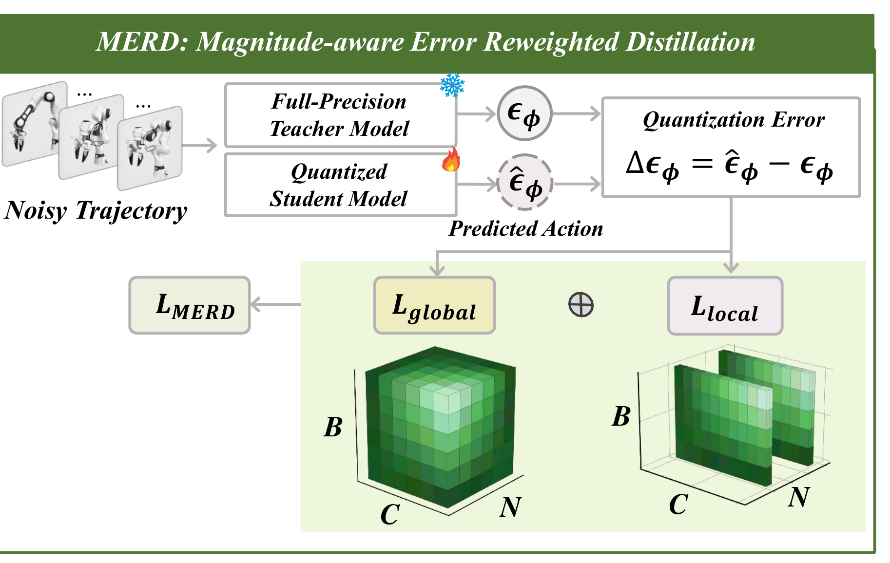
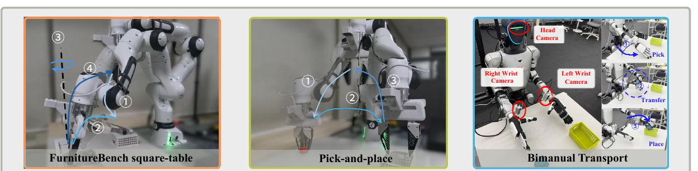
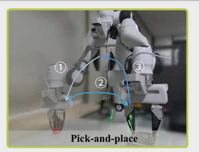
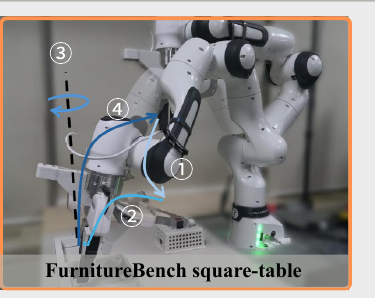
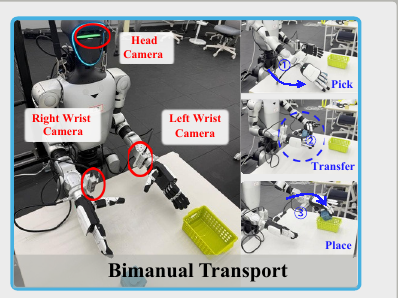

Diffusion Policy achieved strong performance in robot control, but its iterative denoising process hinders deployment on resource-constrained edge devices. To overcome this problem, we propose Agile Diffusion Policy (AgileDP), which introduces integer-based quantization of diffusion policies. We address fundamental challenges in quantizing diffusion policies: (1) drastic activation distribution shifts across denoising steps and (2) large relative quantization error at low-magnitude regions of the action sequence.
First, diffusion models exhibit wide variation in activation distributions across denoising timesteps, rendering fixed quantization grids ineffective. We propose an implicit parametric activation quantization scheme utilizing a lightweight neural network to project timestep information, dynamically adapting the quantization scale without extra training overhead. Second, we observe that low-magnitude regions of the action sequence consistently exhibit large relative quantization error. We propose a magnitude-aware error reweighted distillation that targets these large-error regions to recover action accuracy.
Extensive evaluations of 7 tasks in 3 benchmarks show robust performance even with 4-bit precision, comparable to the full-precision model. Furthermore, by achieving up to 8.5× speedup and 3.2× memory savings, this work validates practical deployment on robotic on-board devices.

Quantization noise is the residual between each quantized value and its full-precision counterpart. In a diffusion policy this noise accumulates through iterative denoising and receding-horizon control, pushing the policy onto out-of-distribution action trajectories. We localise the degradation along two dimensions of Diffusion Policy that prior diffusion-quantization work does not jointly address.

The same noise-prediction network is invoked $T$ times. At early timesteps noise dominates and activation ranges are wide; at late timesteps structured signal emerges and ranges become narrow. Calibrating on narrow ranges causes truncation error; calibrating on wide ranges causes rounding error.
A fixed scale bounds the absolute rounding error by a constant, so low-magnitude actions suffer a large relative error. Those actions often encode the fine, contact-rich corrections that decide task success, yet an average distillation loss lets large-magnitude actions dominate the gradient.

Both modules sit inside a quantization-aware fine-tuning framework built on symmetric uniform quantization. With scale $\delta$ and bit-width $a$,
$$ Q_U(x, \delta) = \operatorname{clip}\!\left(\lfloor x/\delta \rceil,\ -2^{a-1},\ 2^{a-1}-1\right)\cdot\delta $$
and we adopt QALoRA so that base and low-rank weights are merged before quantization, giving a pure-integer forward pass without runtime dequantization:
$$ Y = Q_U(X, \delta_x)\cdot Q_U(W_0 + BA,\ \delta_w) = \hat{X}\hat{W} $$

Rather than predicting a separate step size $\delta$ for every denoising timestep, TADA assigns a single base scale $\delta_x$ per quantized layer and modulates the effective resolution with a timestep-dependent scaling factor:
$$ \tilde{x}_t = s(\tilde{t})\cdot x_t,\qquad \hat{x}_t = Q_U(\tilde{x}_t, \delta_x) $$
Scaling by $s(\tilde{t})$ before quantizing with a fixed $\delta_x$ is equivalent to quantizing with the dynamic scale $\delta_x / s(\tilde{t})$, so activations from every timestep are normalised into one effective quantization range. Each quantized layer carries a lightweight MLP whose hidden layer is randomly initialised and frozen:
$$ s^{(l)}(\tilde{t}) = \mathrm{Softplus}\!\left(W_2^{(l)}\cdot \mathrm{SiLU}\!\left(W_1^{(l)}\tilde{t} + b_1^{(l)}\right) + b_2^{(l)}\right) $$
The output layer is fitted without gradient descent. Target scales come from the activation RMS on a calibration set, $s_t^{*(l)} = \sigma_{ref}^{(l)} / \sigma^{(l)}(t)$, and the fit reduces to ridge regression with the closed-form solution $\theta^{*(l)} = \left(H^{(l)\top}H^{(l)} + \mu I\right)^{-1}H^{(l)\top}y^{(l)}$. The MLP is then frozen for all of fine-tuning, so TADA adds no per-timestep parameter overhead — unlike methods that learn or store a scale for each of the $T$ steps.

MERD turns the observed negative correlation between action magnitude and relative quantization error into a training objective. A global term preserves the teacher's overall prediction behaviour,
$$ \mathcal{L}_{global} = \frac{\mathbb{E}\left[\lVert \Delta\epsilon_\phi \rVert_2^2\right]}{\mathbb{E}\left[\lVert \epsilon_\phi \rVert_2^2\right]},\qquad \Delta\epsilon_\phi = \hat{\epsilon}_\phi - \epsilon_\phi $$
while a relative-error score locates the action-sequence positions where quantization error dominates the teacher prediction. The normalisation term $\eta\bar{P}$ prevents the score from exploding in near-zero regions:
$$ S_{b,n} = \frac{\lVert \Delta\epsilon_{\phi,b,n,:} \rVert_2^2}{\lVert \epsilon_{\phi,b,n,:} \rVert_2^2 + \eta\bar{P}},\qquad \bar{P} = \mathbb{E}_{b,n}\!\left[\lVert \epsilon_{\phi,b,n,:} \rVert_2^2\right] $$
Distillation is then reweighted onto the top-$K$ scoring positions, with logarithmic compression and clipping for numerical stability:
$$ \mathcal{L}_{local} = \sum_{(b,n)\in \mathcal{I}_K} \alpha_{b,n}\log\!\left(1 + \operatorname{clip}(S_{b,n}, S_{max})\right) $$
The total objective combines the two with the DDPM loss: $\mathcal{L}_{AgileDP} = \mathcal{L}_{DDPM} + \lambda\,\mathcal{L}_{MERD}$, where $\mathcal{L}_{MERD} = \mathcal{L}_{global} + \mathcal{L}_{local}$.
We evaluate 7 tasks on Robomimic, Push-T and Franka Kitchen under 8-bit and 4-bit quantization, using pretrained CNN-based (DP-C) and transformer-based (DP-T) diffusion policies with the DDPM scheduler. Results are reported as max / average over 3 seeds, 50 initialisations and 2 checkpoints.
| Method | Lift | Can | Square | Transport | ToolHang | Push-T | Kitchen | ||||||
|---|---|---|---|---|---|---|---|---|---|---|---|---|---|
| ph | mh | ph | mh | ph | mh | ph | ph | ph | p1 | p2 | p3 | p4 | |
| FP32 DP-C | 1.00/1.00 | 1.00/1.00 | 1.00/0.98 | 1.00/0.96 | 0.94/0.90 | 0.92/0.85 | 0.94/0.91 | 0.86/0.77 | 0.91/0.86 | 1.00/1.00 | 1.00/1.00 | 1.00/1.00 | 1.00/1.00 |
| FP32 DP-T | 1.00/1.00 | 1.00/1.00 | 0.96/0.91 | 1.00/0.94 | 0.80/0.74 | 0.82/0.77 | 0.92/0.81 | 0.72/0.54 | 0.76/0.70 | 1.00/1.00 | 1.00/0.99 | 1.00/0.99 | 1.00/0.97 |
| PTQ DP-C | 0.36/0.15 | 0.14/0.06 | 0.00/0.00 | 0.00/0.00 | 0.00/0.00 | 0.00/0.00 | 0.00/0.00 | 0.00/0.00 | 0.17/0.13 | 0.48/0.29 | 0.02/0.00 | 0.00/0.00 | 0.00/0.00 |
| PTQ DP-T | 0.64/0.28 | 0.12/0.02 | 0.00/0.00 | 0.00/0.00 | 0.00/0.00 | 0.00/0.00 | 0.00/0.00 | 0.00/0.00 | 0.40/0.26 | 0.60/0.18 | 0.02/0.00 | 0.00/0.00 | 0.00/0.00 |
| PTQD DP-C | 1.00/0.77 | 0.70/0.32 | 0.08/0.04 | 0.00/0.00 | 0.08/0.03 | 0.00/0.00 | 0.00/0.00 | 0.00/0.00 | 0.34/0.21 | 0.24/0.06 | 0.00/0.00 | 0.00/0.00 | 0.00/0.00 |
| PTQD DP-T | 1.00/0.93 | 0.60/0.29 | 0.08/0.03 | 0.02/0.00 | 0.00/0.00 | 0.00/0.00 | 0.00/0.00 | 0.00/0.00 | 0.68/0.60 | 0.24/0.07 | 0.04/0.01 | 0.00/0.00 | 0.00/0.00 |
| SVDQuant DP-C | 1.00/1.00 | 1.00/0.81 | 0.48/0.25 | 0.34/0.16 | 0.70/0.22 | 0.14/0.05 | 0.00/0.00 | 0.00/0.00 | 0.77/0.67 | 0.52/0.39 | 0.20/0.14 | 0.10/0.05 | 0.04/0.01 |
| SVDQuant DP-T | 1.00/1.00 | 0.86/0.62 | 0.62/0.21 | 0.12/0.06 | 0.28/0.13 | 0.00/0.00 | 0.00/0.00 | 0.00/0.00 | 0.76/0.59 | 0.74/0.33 | 0.04/0.01 | 0.00/0.00 | 0.00/0.00 |
| AgileDP DP-C | 1.00/1.00 | 1.00/1.00 | 0.96/0.92 | 1.00/0.90 | 0.96/0.89 | 0.84/0.74 | 0.94/0.70 | 0.76/0.66 | 0.86/0.82 | 1.00/1.00 | 0.98/0.96 | 0.94/0.89 | 0.82/0.74 |
| AgileDP DP-T | 1.00/1.00 | 1.00/1.00 | 0.98/0.91 | 0.92/0.89 | 0.87/0.82 | 0.83/0.81 | 0.84/0.77 | 0.46/0.41 | 0.78/0.72 | 1.00/0.99 | 1.00/0.99 | 0.98/0.98 | 0.92/0.91 |
| Method | Lift | Can | Square | Transport | ToolHang | Push-T | Kitchen | ||||||
|---|---|---|---|---|---|---|---|---|---|---|---|---|---|
| ph | mh | ph | mh | ph | mh | ph | ph | ph | p1 | p2 | p3 | p4 | |
| FP32 DP-C | 1.00/1.00 | 1.00/1.00 | 1.00/0.98 | 1.00/0.96 | 0.94/0.90 | 0.92/0.85 | 0.94/0.91 | 0.86/0.77 | 0.91/0.86 | 1.00/1.00 | 1.00/1.00 | 1.00/1.00 | 1.00/1.00 |
| FP32 DP-T | 1.00/1.00 | 1.00/1.00 | 0.96/0.91 | 1.00/0.94 | 0.80/0.74 | 0.82/0.77 | 0.92/0.81 | 0.72/0.54 | 0.76/0.70 | 1.00/1.00 | 1.00/0.99 | 1.00/0.99 | 1.00/0.97 |
| PTQ DP-C | 1.00/0.99 | 1.00/0.93 | 0.96/0.45 | 0.18/0.08 | 0.90/0.63 | 0.44/0.17 | 0.00/0.00 | 0.18/0.04 | 0.88/0.83 | 0.70/0.30 | 0.32/0.09 | 0.18/0.04 | 0.14/0.02 |
| PTQ DP-T | 1.00/1.00 | 1.00/1.00 | 0.98/0.94 | 0.96/0.80 | 0.90/0.84 | 0.70/0.35 | 0.72/0.16 | 0.76/0.40 | 0.76/0.71 | 1.00/0.99 | 1.00/0.99 | 1.00/0.98 | 0.94/0.89 |
| PTQD DP-C | 1.00/1.00 | 1.00/1.00 | 0.82/0.56 | 0.90/0.47 | 0.96/0.74 | 0.90/0.16 | 0.78/0.23 | 0.54/0.19 | 0.82/0.50 | 1.00/0.77 | 1.00/0.64 | 0.94/0.50 | 0.74/0.26 |
| PTQD DP-T | 1.00/1.00 | 1.00/0.92 | 0.60/0.41 | 0.20/0.06 | 0.18/0.04 | 0.00/0.00 | 0.00/0.00 | 0.06/0.01 | 0.77/0.68 | 0.60/0.15 | 0.18/0.03 | 0.00/0.00 | 0.00/0.00 |
| SVDQuant DP-C | 1.00/1.00 | 1.00/1.00 | 1.00/0.98 | 0.98/0.97 | 0.96/0.94 | 0.94/0.82 | 0.98/0.87 | 0.86/0.74 | 0.89/0.83 | 1.00/1.00 | 1.00/1.00 | 1.00/1.00 | 1.00/0.99 |
| SVDQuant DP-T | 1.00/1.00 | 1.00/1.00 | 1.00/0.96 | 1.00/0.94 | 0.96/0.93 | 0.86/0.78 | 0.84/0.81 | 0.66/0.51 | 0.77/0.71 | 1.00/1.00 | 1.00/1.00 | 1.00/0.99 | 0.98/0.98 |
| AgileDP DP-C | 1.00/1.00 | 1.00/1.00 | 0.98/0.96 | 0.98/0.94 | 0.94/0.92 | 0.86/0.84 | 0.92/0.87 | 0.82/0.74 | 0.86/0.84 | 1.00/1.00 | 1.00/1.00 | 1.00/1.00 | 1.00/0.99 |
| AgileDP DP-T | 1.00/1.00 | 1.00/1.00 | 1.00/0.96 | 1.00/0.95 | 0.91/0.88 | 0.88/0.81 | 0.86/0.84 | 0.68/0.53 | 0.81/0.72 | 1.00/1.00 | 1.00/1.00 | 1.00/0.99 | 0.96/0.95 |
Visual policies are evaluated on Robomimic and Push-T, state policies on Kitchen. Push-T reports target-area coverage rather than success rate; for Kitchen, px is the rate of completing at least x subtasks. ph = proficient-human demonstrations, mh = mixed-human.
At W4A4 every baseline collapses: PTQ reaches near-zero success on most tasks, and PTQD and SVDQuant drop Square, Transport and ToolHang to 0%. AgileDP is the only method that stays close to full precision, and on the long-horizon Kitchen task it restores 4-subtask completion to 74% where PTQD already fails at the first subtask.
Every clip in this section is a generated placeholder. Overwrite the matching file in
static/videos/ and the page picks it up with no HTML change.
Inference latency is averaged over 10 rollouts across all denoising steps; model size counts the denoising model plus quantization parameters. Quantized entries are W4A4.
| Device / Metric | FP32 | PTQ | AgileDP | |||
|---|---|---|---|---|---|---|
| DP-C | DP-T | DP-C | DP-T | DP-C | DP-T | |
| RTX 4060 Ti · latency (ms) | 1154.3 | 292.5 | 185.2 | 71.3 | 236.8 | 116.1 |
| RTX 4060 Ti · size (MB) | 1054.0 | 125.7 | 278.8 | 100.8 | 268.0 | 118.9 |
| Jetson Orin Nano · latency (ms) | 804.0 | 185.2 | 95.9 | 76.3 | 94.5 | 75.8 |
| Jetson Orin Nano · size (MB) | 1287.5 | 34.5 | 337.7 | 18.0 | 405.3 | 26.0 |
Gains are smaller for DP-T because its denoising model is far more compact than DP-C (9.0M vs 66.9M parameters). TADA's frozen MLPs account for the modest overhead AgileDP carries over plain PTQ.

| Method | Franka Panda | Unitree G1 | |
|---|---|---|---|
| Pick-and-place | Square-table | Transport | |
| Full Precision | 0.84 | 0.80 | 0.56 |
| PTQ | 0.00 | 0.00 | 0.00 |
| AgileDP | 0.80 | 0.64 | 0.44 |
AgileDP recovers 95.2% and 80% of full-precision performance on the two Franka Panda tasks and 78.6% on the Unitree G1 bimanual transport task, generalising to coordinated humanoid manipulation. PTQ collapses to 0% on every real-world deployment.

Pick-and-placeFranka Panda
Square-tableFranka Panda
Bimanual TransportUnitree G1TADA derives its target scaling factors from the median activation RMS during calibration. When those targets vary sharply across timesteps, the closed-form regression can fit them sub-optimally.
The reported speedups also understate what W4A4 can deliver. TensorRT's INT4 support covers weight-only GEMM, while convolutions stay at INT8, and the Diffusion Policy U-Net mixes 1D convolutions with linear layers. End-to-end INT4 kernel execution is therefore not yet feasible. Specialised 4-bit kernels, as demonstrated for LLM inference, would let AgileDP realise its full efficiency potential on edge devices.
@inproceedings{joung2026agiledp,
title = {AgileDP: Quantizing Diffusion Policy via Dynamic Scaling and Reweighted Distillation},
author = {Joung, Jiyeon and Lee, Seungseop and Kim, Namyoon and Jang, Keunwoo},
booktitle = {Conference on Robot Learning (CoRL)},
year = {2026}
}